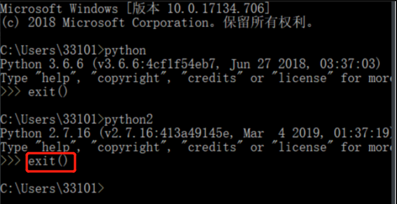

• python所有的符号全部是英文的符号
• 数字和bool不支持迭代,列表支持
• 列表有序,可变,支持索引
• 元组有序,不可变,支持索引
• 字典是无序的,可变的数据类型,不支持索引.
• 集合,无值的字典,无序,不支持索引,可更改,天然去重.
• 高仿(组或元组)只支持for循环,不支持索引步长,切片
• 字符串中一个字母一个数字一个汉字就是元素
• 不管什么类型进行切片的时候获取到的都是源数据类型(字符串,切完还是字符串,数字,切完还是数字)
• 字符串是不可变数据
• range和while不能结合使用,会报错,一定要注意
• 高仿(组或元组)只支持for循环,不支持索引步长,切片
• 两个变量互换,一行代码解决 a,b=b,a 一次赋值两个变量
• 冻结集合,将冻结集合可以当做"键"插入字典中.
• type() 作用,查看括号里内容的类型
• id()查看括号内变量的内存空间地址
• 字典的值要定义成不可变的,才不会被共用,列表可变会共用.
• dic(字典)内存占的最多
• ctrl +左键点关键字,看源码 pycharm中.
• 数字里非零的数字都是True,只有0是False,正数负数(包含小数)都是True
• /r 表示空格,/t表示缩进(加个制表符),\n表示换行
• python2无需将打印的东西放在括号里也可打印
• print"name" # python 2 可以打印出name单python 3不行,会报错
• print("name") python3必须这样才能打印出来name,这个格式python2 也可打印出name
• join()拼接 拼接的符号join(可迭代对象)两个元素或字符之间加符号.
• li = ["alex", "wusir", "taibai"]
• print("_".join(li)) # 拼接的符号.join(可迭代对象)
• # 输出为:alex_wusir_taibai
• for循环中字典不能添加元素（for循环时，字典不能变）,要用if循环添加字典内容.
• www.processon.com 网上做图
• www.python.org python官网要记住
• cmd时退出python 用exit()括号一定要是英文的

• 码云https://gitee.com/